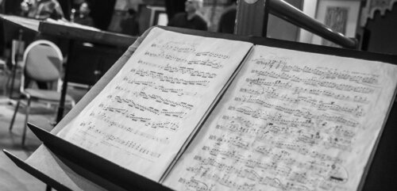
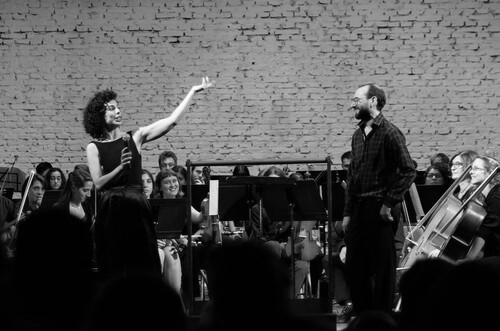
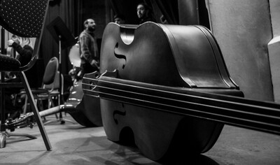

¨Cuando la perseverancia actúa lo utópico se hace posible¨
Quienes somos
La Orquesta Sinfónica de Estudiantes está integrada por estudiantes del Conservatorio e IPA de la ciudad de Mar del Plata y por otros músicos de la ciudad que se han sumado a este proyecto. Surge como reacción ante la falta de espacios donde los estudiantes de música puedan hacerse de un oficio sinfónico-orquestal. Es un proyecto independiente que llevamos adelante con mucho esfuerzo y amor a la música. La orquesta es un espacio para la práctica orquestal de género “clásico” o “académico” de los estudiantes y músicos en formación, así como también un organismo que atrae a músicos de diferentes ámbitos por su seriedad en la preparación y presentación de conciertos. Como proyecto pedagógico-artístico independiente y autogestionado el trabajo de los coordinadores, directores e integrantes de la Orquesta se realiza ad honorem; destinando lo recaudado, en los conciertos que se haya cobrado entrada, a la compra de instrumentos para préstamo a nuevos integrantes de la orquesta sin posibilidades de adquirirlo.
Integrantes
La orquesta cuenta con 60 integrantes estudiantes de diferentes instituciones y/o proyectos, y otros músicos de la ciudad de diferentes trayectorias. La convocatoria a integrar la orquesta siempre está abierta a quienes dominen a un nivel intermedio un instrumento sinfónico y posean lectura de partituras musicales, sin límites de edad; diferenciándose así de organismos juveniles y/o infantiles para ser de jóvenes y adultos. Tambien cuenta con dos coordinadores desde su inicio: Luz Garcia Souto y Lucas Uriaguereca, ambos fueron estudiantes del conservatorio de música “Luis Gianneo”. Entre sus múltiples tareas se destacan: dirección de los ensayos parciales, gestión de lugar de ensayo, gestión y difusión de fechas de concierto, elección del repertorio, gráfica (afiches y programas), gestión de viajes y conciertos didácticos, copistas, archivistas y arregladores. Pedido de préstamo y traslado de instrumentos adicionales/ocacionales. Convocatoria a integrantes y refuerzos colaboradores. Administración de lo recaudado en los conciertos, que incluye pedido de presupuesto, compra y mantenimiento de instrumentos. Registro fotográfico y audiovisual de los conciertos.
Historia
La orquesta se formó en enero de 2012 con el fin de recaudar fondos para la compra de una máquina fotocopiadora para el primer centro de copiado autogestionado de la historia del conservatorio de música de nuestra ciudad. Habiendo cumplido su primer objetivo tras el primer concierto del 4 de abril en el Teatro Colón sus coordinadores y director vieron sobrepasadas sus expectativas en cuanto a la convocatoria de integrantes. Su compromiso y entusiasmo, sumado a la repercusión del público, posibilitó la consolidación del proyecto. Durante sus dos primeros años se denominó “Orquesta sinfónica del centro de estudiantes “Luis Gianneo”, con la intención de mantener un espíritu solidario, aunque nunca fue un espacio institucional.
